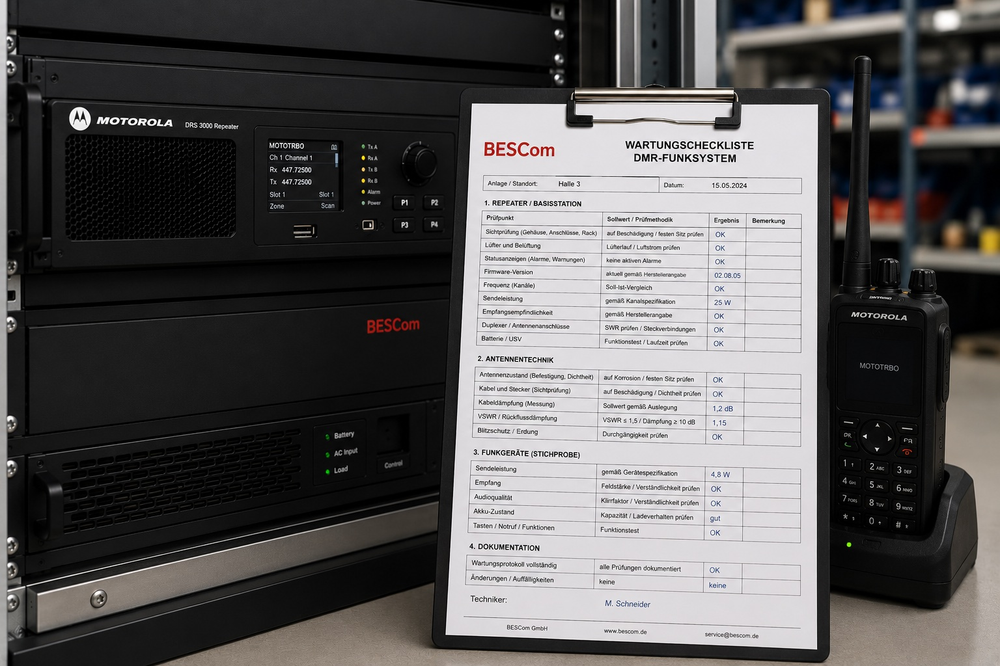

"Alle zwei Jahre reicht doch" – dieser Satz ist in der Praxis oft das Ergebnis eines Blicks ins Handbuch und des Wunsches, Wartungskosten zu minimieren. Und: Er ist für viele Betriebe schlicht falsch. Nicht weil die Hersteller lügen, sondern weil Herstellerempfehlungen in einer Idealbedingung entstehen, die mit einem Hamburger Hafenbetrieb oder einer Seehafenumschlaghalle nichts gemein hat.
In diesem Artikel erklären wir, welche Intervalle Hersteller empfehlen, in welchen Umgebungen diese ausreichen – und wann ein Betrieb klug daran tut, deutlich häufiger zu warten.

Was Hersteller empfehlen
Die gängigen DMR-Hersteller (Motorola Solutions, Hytera, Sepura, Kenwood) geben in ihren Servicedokumenten folgende Richtwerte:
| Hersteller / Gerätelinie | Empfohlenes Intervall | Umgebungsannahme |
|---|---|---|
| Motorola MOTOTRBO (DR3000, MTR3000) | Jährlich bis 18 Monate | Büro/Indoor, kontrollierte Umgebung |
| Hytera RD625 / RD985 | Jährlich | Standard-Industrieumgebung |
| Sepura SBR8000 | 12–18 Monate | Leichte bis mittlere Industrieumgebung |
| Kenwood NXR-710 | Jährlich | Indoor, moderate Belastung |
Alle diese Empfehlungen haben eine gemeinsame Grundannahme: Der Repeater steht in einem sauberen, belüfteten Technikraum mit konstanter Temperatur, ohne Staub, Dämpfe oder Erschütterungen. Das ist in vielen Industriebetrieben die Ausnahme, nicht die Regel.
Die Realität: Wo die Herstellerempfehlung zu kurz greift
Folgende Betriebsumgebungen erfordern nach unserer Praxiserfahrung kürzere Wartungsintervalle:
Umgebungen mit hoher Staubbelastung
Holzverarbeitung, Sägewerke, Baustoffbetriebe, Zementwerke: Feiner Staub setzt sich innerhalb von Wochen auf Lüftungsschlitzen und Leiterplatten ab. Empfehlung: Halbjährliche Inspektion, mindestens Reinigung alle 6 Monate.
Chemische Dämpfe und Säure-Atmosphäre
Galvanik, Gerbereien, Chemiebetriebe, Lebensmittelproduktion mit aggressiven Reinigungsmitteln: Anschlusskontakte und Platinenbeschichtungen korrodieren deutlich schneller. Empfehlung: Halbjährlich, mit besonderem Fokus auf Steckverbinder und Antennenanschlüsse.
Hafenumgebung und Salzluft
Hamburger Hafen, maritime Industrie: Salzhaltige Luft ist einer der aggressivsten Korrosionsbeschleuniger. Koaxialkabel, Antennenanschlüsse, Außenantennen degradieren deutlich schneller. Empfehlung: Halbjährliche Außenantenna-Inspektion, jährliche Vollwartung.
Erschütterungsintensive Betriebe
Schwermaschinenbetrieb, Pressen, Verdichter in unmittelbarer Nähe des Technikraums: Vibrationen lockern Steckverbinder und schädigen Lötstellen über Zeit. Empfehlung: Jährliche Prüfung aller Steckverbinder auf Festsitz.
Extreme Temperaturschwankungen
Außen-Repeater oder Technikräume ohne Klimatisierung: Thermische Zyklen dehnen und schrumpfen Gehäuse und Leiterkarten, was zu Rissen in Lötstellen führt. Empfehlung: Jährlich, bei starken Zyklen halbjährlich.
So sieht ein praxistauglicher Wartungsplan aus
BESCom entwickelt für jeden Betrieb einen individuellen Wartungsplan. Basis ist eine Einschätzung der Betriebsumgebung – einmal vor Ort, danach regelmäßig aktualisiert. Ein typisches Beispiel:
| Maßnahme | Büro / Indoor | Standard-Industrie | Hafen / Schwer-Industrie |
|---|---|---|---|
| Sichtprüfung und Reinigung | Jährlich | Halbjährlich | Vierteljährlich |
| Vollständige Elektrische Messung | Jährlich | Jährlich | Jährlich |
| SWR-Messung Antenne | Jährlich | Jährlich | Halbjährlich |
| Außenantenna-Sichtprüfung | Jährlich | Jährlich | Halbjährlich |
| Firmware-Update-Prüfung | Jährlich | Jährlich | Jährlich |
| Steckverbinder-Prüfung auf Festsitz | Jährlich | Jährlich | Halbjährlich |
Was gehört in einen guten Wartungsnachweis?
Viele Betriebe bekommen von ihrem Wartungsdienstleister ein einseitiges Formular mit Datum und Unterschrift – das ist kein Wartungsnachweis, das ist ein Besuchsnachweis. Ein vollständiger Wartungsnachweis enthält:
- ✅ Genaue Gerätebezeichnung, Seriennummer, Standort
- ✅ Datum und Dauer der Wartung, Name des Technikers
- ✅ Liste aller durchgeführten Prüfschritte mit Ergebnis (OK / Beanstandung / Maßnahme)
- ✅ Messwerte – HF-Ausgangsleistung in dBm/W, SWR-Wert, Empfangssensitivität
- ✅ Firmware-Version des Repeaters zum Zeitpunkt der Wartung
- ✅ Fotos bei Beanstandungen (optional, aber wertvoll)
- ✅ Handlungsempfehlungen und offene Punkte
- ✅ Unterschrift des qualifizierten Technikers
Dieses Dokument ist Ihr Nachweis bei Arbeitssicherheitsprüfungen, Versicherungsanfragen und ISO-Audits. BESCom liefert diesen Nachweis standardmäßig nach jeder Wartung.
Wartungskosten vs. Ausfallkosten: eine ehrliche Rechnung
Viele Betriebsleiter fragen sich, ob sich ein Wartungsvertrag rechnet. Die Antwort hängt von einer einfachen Frage ab: Wie hoch ist Ihr Stundensatz, wenn der Betrieb steht?
| Betriebsgröße | Typischer Ausfallschaden pro Tag | Amortisierung Wartungsvertrag |
|---|---|---|
| Kleiner Betrieb (5–10 Funk-Nutzer) | 1.000–5.000 € | Rechnet sich nach 1 verhinderten Ausfall |
| Mittlerer Betrieb (10–30 Nutzer) | 5.000–20.000 € | Rechnet sich bereits bei einem halben Ausfalltag |
| Großbetrieb / Hafen (30+ Nutzer) | 20.000–100.000 €+ | Rechnet sich bereits nach Stunden |
💡 BESCom-Wartungsverträge sind auf Ihre Betriebsumgebung zugeschnitten. Wir definieren gemeinsam mit Ihnen den Umfang – transparent und fair kalkuliert. Kein Einheitsvertrag, der in Ihrem Betrieb zu viel oder zu wenig leistet.
→ Individuellen Wartungsplan besprechen
Fazit: Das richtige Intervall ist das, das zu Ihrem Betrieb passt
Herstellerempfehlungen sind ein guter Ausgangspunkt – aber sie sind keine Garantie. Wer in einem staubigen, feuchten oder korrosiven Umfeld arbeitet und sich auf "einmal im Jahr reicht laut Handbuch" verlässt, riskiert einen Ausfall, der teurer ist als drei Jahre Wartungsverträge.
BESCom bewertet Ihre Betriebssituation realistisch und empfiehlt ein Wartungsintervall, das wirklich passt – ohne künstlich häufige Besuche zu verkaufen und ohne wichtige Prüfungen aus Kostengründen wegzulassen.
BESCom bewertet Ihre Betriebsumgebung und empfiehlt das optimale Wartungsintervall – kostenlos und ohne Verkaufsdruck.